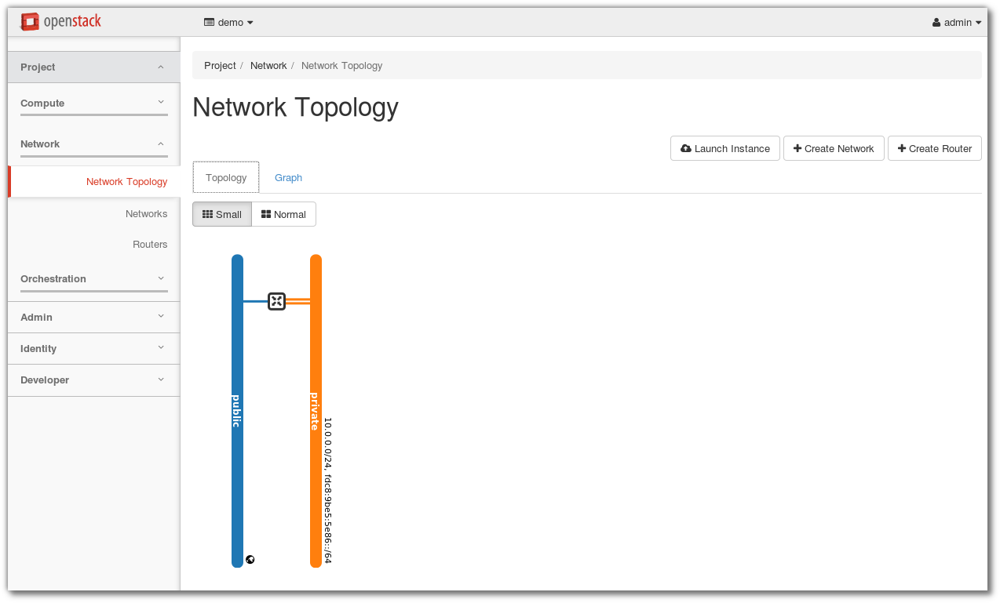

Openstack With DevStack¶
Devstack with Vagrant¶
file vagrant สำหรับการทดสอบ devstack
# -*- mode: ruby -*-
# vi: set ft=ruby :
Vagrant.configure("2") do |config|
config.vm.box = "fedora/24-cloud-base"
config.vm.define :devstack do |node|
node.vm.hostname = "devstack.example.com"
node.vm.provider :libvirt do |domain|
domain.uri = 'qemu+unix:///system'
domain.driver = 'kvm'
domain.memory = 8192
domain.cpus = 2
domain.nested = true
domain.volume_cache = 'none'
domain.storage :file, :size => '20G'
end
end
end
Download complete file Vagrantfile2:
เตรียมเครื่อง host ให้สนับสนุน nested kvm เนื่องจากเรากำลังสร้าง openstack ซ้อนใน VM ทำดังต่อไปนี้
vi /etc/modprobe.d/kvm-nested.conf
options kvm_intel nested=1
modprobe -r kvm_intel
modprobe kvm_intel
reboot
Install Devstack¶
หลังจาก ที่เราได้ทำการ vagrant up server1 เรียบร้อยแล้ว vm นี้มีขนาด RAM 8 Gb เพื่อใช้การทดสอบ
openstack ทดสอบโดยการสร้าง Directory สำหรับการทดสอบ Devstack และ ให้ Download หรือ สร้าง
file Vagrant จากตัวอย่างด้านบน
mkdir ~/Devstack
cd ~/Devstack
wget https://thaiopen.github.io/sipacloudcourse/_downloads/Vagrantfile2
mv Vagrantfile2 Vagrantfile
## ssh to vagrant
vagrant ssh devstack
## change to root
sudo su -
useradd -d /opt/stack stack
echo "stack ALL=(ALL) NOPASSWD: ALL" >> /etc/sudoers
exit
## on normal vagrant user
sudo dnf install git
git clone https://git.openstack.org/openstack-dev/devstack
cd devstack
## create local.conf
cat << LOCAL > local.conf
[[local|localrc]]
ADMIN_PASSWORD=password
DATABASE_PASSWORD=password
RABBIT_PASSWORD=password
SERVICE_PASSWORD=password
LOCAL
## run stack.sh
./stack.sh
script stack.sh จะทำการ download source code จาก github และมาติดตั้งให้เองอัตโนมัติ
โดยdownload มาเก็บไปใน /opt/stack และผลลัพท์ที่ได้ จะสามารถใช้งาน openstack ได้ทันที:
=========================
DevStack Component Timing
=========================
Total runtime 3780
run_process 41
pip_install 535
restart_apache_server 8
wait_for_service 10
yum_install 181
git_timed 2075
=========================
This is your host IP address: 192.168.121.113
This is your host IPv6 address: ::1
Horizon is now available at http://192.168.121.113/dashboard
Keystone is serving at http://192.168.121.113/identity/
The default users are: admin and demo
The password: password
2016-07-19 10:32:41.679 | WARNING:
2016-07-19 10:32:41.679 | Using lib/neutron-legacy is deprecated, and it will be removed in the future
2016-07-19 10:32:41.679 | stack.sh completed in 3780 seconds.
เปิด browser ไปยัง http://192.168.121.113/dashboard

login ด้วย admin/password

Manage Devstack¶
ให้ทำการ enable service เนื่องจากอาจมีการ restart vm:
sudo systemctl enable openvswitch mariadb rabbitmq-server
เนื่องจาก devstack run service ต่างๆ ใน screen session ไม่มี service command สำหรับการ start stop ัดังนั้นจะต้องเข้าไปใน screen session มีขั้นตอนดังนี้:
screen -list
There is a screen on:
28843.stack (Detached)
1 Socket in /var/run/screen/S-vagrant.
จะพบว่ามี screen session ชื่อ stack run อยู่:
screen -x stack
หลังจาก run แล้ว จะเข้าสู่ session ของ screen ดังรูปด้านล่าง ซึ่งจะต้องใช้คำสั่งในการจัดการ โดยให้พิมพ์คำสั่ง
ขึ้นต้นด้วย Ctrl+b แล้วตามด้วยค่าต่างๆ

คำสั่งแสดง list ทั้งหมด:
Ctrl a " (กด ctrl a แล้วปล่อย จากนั้นตามด้วย ")

เลือก process:
*. เลื่อน cursor ไปยัง process ที่ต้องการ แล้วจึงกด ``enter``เพื่อเลือกไปดู process เช่น เลือนไปยัง
process 2 ซึ่งเป็น process ของ keystone ``enter`` เพื่อทำการ monitor ใหัสังเกตุดูบรรทัดล่างสุด
จะมี เครื่องหมาย ``*`` รูปด้านล่าง
*. สามารถกด ``Ctrl a N`` โดยที่ N หมายถึงหมายเลข ของ process จะทำให้เข้าไปยัง process นั้นทันที

ออกจาก stack:
screen -d
Add Devstack plugin¶
สามารถทำได้ด้วยการ เพิ่มเติมค่าใน local.conf
[[local|localrc]]
#OFFLINE=True
ADMIN_PASSWORD=password
DATABASE_PASSWORD=password
RABBIT_PASSWORD=password
SERVICE_PASSWORD=password
#1 Do not use Nova-Network
disable_service n-net
# Enable Neutron service
ENABLED_SERVICES+=,q-svc,q-dhcp,q-meta,q-agt,q-l3
#2 Heat service
enable_service heat h-eng h-api h-api-cfn h-api-cw
CEILOMETER_BACKEND=mongodb
CEILOMETER_NOTIFICATION_TOPICS=notifications,profiler
#3 enable plugin
enable_plugin ceilometer https://git.openstack.org/openstack/ceilometer
enable_plugin aodh https://git.openstack.org/openstack/aodh
enable_plugin neutron-lbaas https://git.openstack.org/openstack/neutron-lbaas
enable_plugin octavia https://git.openstack.org/openstack/octavia
enable_plugin barbican https://git.openstack.org/openstack/barbican
IMAGE_URLS+=",https://cloud-images.ubuntu.com/trusty/current/trusty-server-cloudimg-amd64-disk1.img"
IMAGE_URLS+=",http://cloud.centos.org/centos/7/images/CentOS-7-x86_64-GenericCloud-1606.qcow2"
Download complete file local.conf2:
หลังจากแก้ไขค่าแล้ว ให้ สั่งคำสั่งดังนี้
./unstack.sh
vi local.conf
./stack.sh
Note
ค่าที่อยู่ใน local.conf เป็นการสั่งให้ติดตั้ง service และ plugin แต่ยังไม่มีการ preconfig
devstack จะทำการสร้าง network ไว้ให้เป็นตัวอย่างที่ 10.0.0.0/24
หลังจากที่สำเร็จ จะได้ผลลัพท์:
=========================
DevStack Component Timing
=========================
Total runtime 2872
run_process 103
test_with_retry 3
pip_install 314
restart_apache_server 19
wait_for_service 14
yum_install 182
git_timed 1006
=========================
This is your host IP address: 192.168.121.113
This is your host IPv6 address: ::1
Horizon is now available at http://192.168.121.113/dashboard
Keystone is serving at http://192.168.121.113:5000/v3/
The default users are: admin and demo
The password: password
2016-07-19 13:29:54.781 | WARNING:
2016-07-19 13:29:54.781 | Using lib/neutron-legacy is deprecated, and it will be removed in the future
2016-07-19 13:29:54.781 | stack.sh completed in 2872 seconds.
ทดสอบ screen -x stack และ list ด้วย Ctrl a "

ทดสอบโดย browser http://192.168.121.113/dashboard เพื่อดูเมนู ที่เปลี่ยนไป จากรูปจะเห็นค่า
config ของ network ที่ devstack เตรียมไว้ให้
Network Menu
Heat Orchestration Menu

Compute Menu

Note
เมื่อเสร็จแล้วต้องการ สิ้นสุด ให้ ./unstack.sh ทุกครั้ง แล้วค่อย stack.sh ใหม่
Ctrl a d ./unstack.sh
Neutron Network Default Settings¶
ค่า default ของ network ที่สร้างหลังจาก ที่ enable neutron โดยมี openswitch เป็นคนสร้างให้ เป็นค่า
default เนื่องจากเราไม่ได้ปรับแต่ค่าตัวแปรใดๆใน local.conf ให้พิมพ์คำสั่ง openvswitch ovs-vsctl show:
sudo ovs-vsctl show
66a8c5c3-6f2c-41a3-9756-9ac89faf1628
Manager "ptcp:6640:127.0.0.1"
is_connected: true
Bridge br-ex
Port "qg-237cb003-ee"
Interface "qg-237cb003-ee"
type: internal
Port br-ex
Interface br-ex
type: internal
Bridge br-tun
Controller "tcp:127.0.0.1:6633"
is_connected: true
fail_mode: secure
Port br-tun
Interface br-tun
type: internal
Port patch-int
Interface patch-int
type: patch
options: {peer=patch-tun}
Bridge br-int
Controller "tcp:127.0.0.1:6633"
is_connected: true
fail_mode: secure
Port br-int
Interface br-int
type: internal
Port "tap7ee7f8f3-62"
tag: 1
Interface "tap7ee7f8f3-62"
type: internal
Port "qr-d9f37ff9-d4"
tag: 1
Interface "qr-d9f37ff9-d4"
type: internal
Port "qr-d7da2f54-f0"
tag: 1
Interface "qr-d7da2f54-f0"
type: internal
Port patch-tun
Interface patch-tun
type: patch
options: {peer=patch-int}
ovs_version: "2.5.0"
ดู interface ด้วย ip link:
$ ip link
1: lo: <LOOPBACK,UP,LOWER_UP> mtu 65536 qdisc noqueue state UNKNOWN mode DEFAULT group default qlen 1
link/loopback 00:00:00:00:00:00 brd 00:00:00:00:00:00
2: eth0: <BROADCAST,MULTICAST,UP,LOWER_UP> mtu 1500 qdisc fq_codel state UP mode DEFAULT group default qlen 1000
link/ether 52:54:00:19:c1:e0 brd ff:ff:ff:ff:ff:ff
3: ovs-system: <BROADCAST,MULTICAST> mtu 1500 qdisc noop state DOWN mode DEFAULT group default qlen 1
link/ether 1e:33:d0:b4:57:f9 brd ff:ff:ff:ff:ff:ff
4: br-tun: <BROADCAST,MULTICAST> mtu 1500 qdisc noop state DOWN mode DEFAULT group default qlen 1
link/ether ae:0f:68:a5:a6:48 brd ff:ff:ff:ff:ff:ff
7: br-int: <BROADCAST,MULTICAST> mtu 1500 qdisc noop state DOWN mode DEFAULT group default qlen 1
link/ether 8a:24:e0:d5:03:42 brd ff:ff:ff:ff:ff:ff
9: br-ex: <BROADCAST,MULTICAST,UP,LOWER_UP> mtu 1500 qdisc noqueue state UNKNOWN mode DEFAULT group default qlen 1
link/ether fe:8e:5d:8c:1c:40 brd ff:ff:ff:ff:ff:ff
11: virbr0: <NO-CARRIER,BROADCAST,MULTICAST,UP> mtu 1500 qdisc noqueue state DOWN mode DEFAULT group default qlen 1000
link/ether 52:54:00:e8:8c:c7 brd ff:ff:ff:ff:ff:ff
12: virbr0-nic: <BROADCAST,MULTICAST> mtu 1500 qdisc fq_codel master virbr0 state DOWN mode DEFAULT group default qlen 1000
link/ether 52:54:00:e8:8c:c7 brd ff:ff:ff:ff:ff:ff